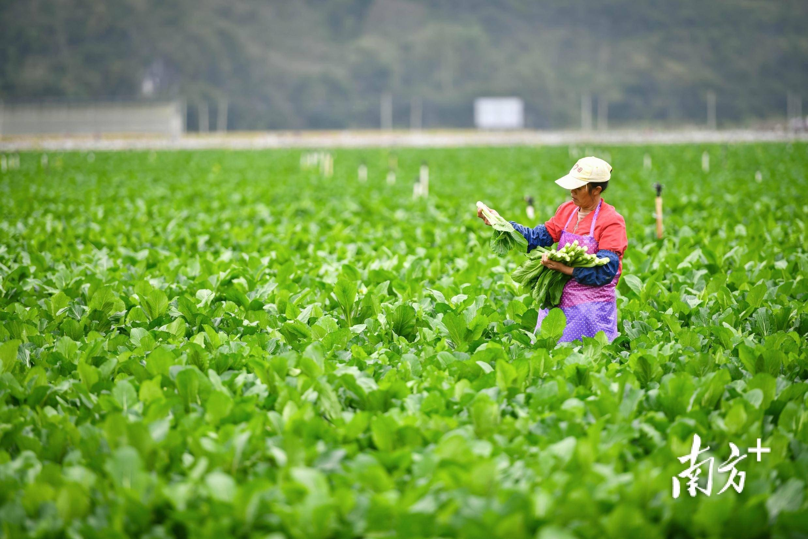

始兴县：始兴县是广东省最大的现代化有机蔬菜生产基地，拥有多个省级和粤港澳大湾区的“菜篮子”基地。近年来，始兴县大力推进蔬菜省级现代农业产业园建设，加快土地流转，促进农业规模化和集约化，目前全县共流转土地10.27万亩，建成多个千亩连片农业产业基地。
东升有机种植农场：位于广东省广州市从化区吕田镇水埔村，种植面积约为1000亩，主要种植菜心、西兰花、芥兰、芥菜等多种蔬菜。
新丰盛有机栽培蔬菜基地：位于广东省兴宁市刁坊镇，种植面积达2000多亩，种植了菜心、奶白、上海青、玉米等多种蔬菜。
肇庆市高要区蚬岗镇：蚬岗镇是广东省蔬菜专业镇，拥有多个蔬菜基地，主要种植白瓜、青瓜、苦瓜、丝瓜、节瓜、茄瓜、豆角等品种。蚬岗豆角尤为出名，是广东省名特优新农产品，主要销往广州、佛山、深圳、珠海、肇庆等城市及港澳地区。
